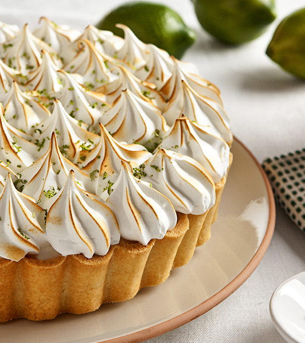

Torta de Limão
receita
ingrediente
massa
200 g de biscoito de maisena
150 g de margarina
recheio
1 lata de leite condensado (395 g)
1 caixa de creme de leite (200 g)
suco de 4 limões
raspas de 2 limões
cobertura
3 ou 4 claras de ovo
3 colheres (sopa) de açúcar
raspas de 2 limões para decorarraspas de 2 limões para decorar
Modo de Preparo
Massa
Triture o biscoito de maisena em um liquidificador ou processador.
Junte a margarina e bata mais um pouco.
Despeje a massa em uma forma de fundo removível (27 cm de diâmetro).
Com as mãos, espalhe os biscoitos triturados no fundo e nas laterais da forma, cobrindo toda área de maneira uniforme.
Leve ao forno médio (180° C), preaquecido, por aproximadamente 10 minutos.
Recheio
Bata todos os ingredientes no liquidificador (exceto as raspas de limão) até obter um creme liso e firme.
Recheie a massa já assada e leve à geladeira por 30 minutos.
Cobertura
Bata as claras em neve e acrescente o açúcar.
Misture até obter um ponto de suspiro e leve ao forno até dourar.
Desenforme a torta (sem retirar o fundo falso), despeje a cobertura e acrescente as raspas de limão.
|
 |